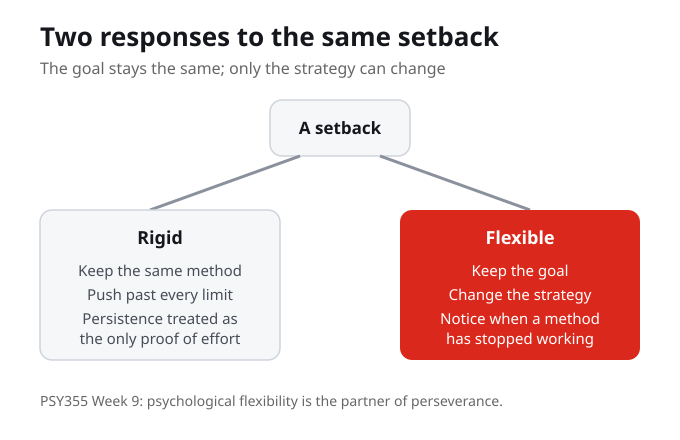

Flexibility, the partner of perseverance
This week treats flexibility as the partner of perseverance: students learn when to continue and when to adjust. The central question is how people keep moving without confusing persistence with pushing past every limit. The goal is to make the psychology useful without turning the week into a personal disclosure task.
Flexibility is not the opposite of perseverance; it is its partner. Persistence means staying with the goal, and flexibility means knowing when to continue and when to adjust.
Think of a time you kept going. Were you continuing or adjusting, and how could you tell the difference?
Perseverance, without pushing past every limit
Perseverance is how people keep moving toward a goal. The risk is confusing persistence with pushing past every limit, where more hours becomes the only proof of effort. This week defines perseverance so that staying with a goal does not have to mean ignoring what a barrier is telling you. The point is to keep moving without pretending the barrier is simple.
Perseverance is keeping moving toward a goal. It becomes a problem only when persistence is confused with pushing past every limit, treating more effort as the only acceptable response.
When you persist, how would you know whether you are staying with the goal or just pushing past a limit?

When a strategy should change
Psychological flexibility is the ability to notice when a strategy should change. In academic examples the goal stays stable while the strategy changes, so a strategy shift is not the same as quitting. The reflection question for the week asks where changing the method might be the most responsible way to keep going. Sometimes adjusting the approach is how you stay with the goal, not how you abandon it.
A strategy shift keeps the goal stable while changing the approach. Changing the method can be the most responsible way to keep going, not a sign of giving up.
Where might changing the method be the most responsible way to keep going?
Where the model helps, and where it needs context
A model of flexible persistence helps when it gives you a way to read a situation, but it also needs context. Use the guiding questions to test it. Where does the model help, and where does it need context? The aim is one concrete action a student could try without pretending the barrier is simple, in ordinary academic, work, and family settings.
A model is a tool for reading a situation, not a rule that fits every case. Asking where it helps and where it needs context keeps the concept honest about real barriers.
Take a real situation. Where would this model help you decide, and where would it need more context to be useful?

A flexible persistence plan
The practice this week is to write a flexible persistence plan with four parts: the goal, the current barrier, a strategy to keep, and a strategy to change. Naming a strategy to keep and a strategy to change in the same plan is what holds perseverance and flexibility together. The plan connects a learning goal to a value and a next action, so the psychology becomes something you can use.
A flexible persistence plan names the goal, the barrier, a strategy to keep, and a strategy to change. Holding all four together is what connects perseverance to flexibility in practice.
For one current goal, name the barrier, one strategy to keep, and one strategy to change.
What You Are Learning This Week
Flexibility Is the Partner of Perseverance
This week treats flexibility as the partner of perseverance. Students learn when to continue and when to adjust, so persistence and flexibility work together rather than against each other. Perseverance needs flexibility to stay healthy.
Persistence Is Not Pushing Past Every Limit
The central question is how people keep moving without confusing persistence with pushing past every limit. Keeping a goal does not require treating more hours as the only proof of effort, and it does not mean pretending the barrier is simple.
A Strategy Shift Keeps the Goal
When the goal stays stable but the approach changes, the shift is in the strategy, not the goal. Changing the method can be the most responsible way to keep going, which is why a strategy shift is different from quitting.
Make a Flexible Persistence Plan
The practice is to write a plan with four parts: goal, current barrier, strategy to keep, strategy to change. The plan connects a learning goal to a value and a next action, so the psychology stays useful in academic, work, and family settings.